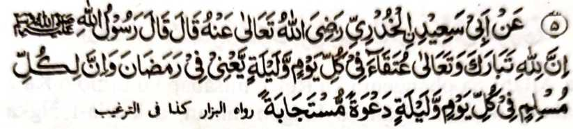
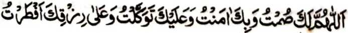
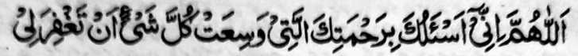
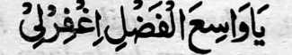

Hadith - 5

Miyakathitayan ko Abu Said Al'Khudri (Radhiallaho Anho) a pitharo iyan a pitharo o Rasulollah (Sallallaho Alaihi Wasallam), “Mata-an a so Allah (Subhaanaho Wa Ta'ala) a Soti ago Maporo na phemaradika-an niyan ko oman kagagawi-i ago oman kadadaon-dao ko Ramadhan (so manga tao sa Naraka), go si-i ko oman kagagawi-I ago oman kadaondao na petharima Sekaniyan sa di kakorangan so satiman a pangeni o oman isa a Muslim. ”
OSAYAN
Liyo pen sangka-iya a Hadith na madakel pen a salakao a Hadith a inaloy niyan a so pangeni o tao a gi-i mamowasa na tatarima-an. Si-i ko isa a Hadith na miyabatiya tano ron a so pangeni na tatarima-an ko masa o Iftar (Kathangkas), ogaid na aya kalalayaman na matetembang tano ko gi-i tano kakan na pekhalepas tano angka-iya a mapiya (pangeni). Aya lomalangkap a pangeni ko Iftar na:

“Ya Allah! na sabap Reka a kiyathiger aken, go Seka-i paparatiyaya-an ko, go si-i ako Reka pananarig, go si-i ko Rizqi Ngka na ron ako pethangkas.”
So Abdullah bin Amr bin As (Radhiallaho ‘Anho) na aya ola-ola niyan na gi-i niyan na-i indowa-a.

“Ya Allah! na phangenin ko Reka, misabap ko Limo o Ka a kalalangkoloban niyan so langon taman, a karila-i Ngka raken."
Si-i ko saba-ad a manga kitab na miyabatiya tano a so Rasulollah (Sallallaho ‘Alaihi Wasallam) na aya ola-ola niyan na gi-i niyan tharo-on:

“Hay Maolad-i limo! Rila-i ako Ngka.”
Madakel a manga dowa-a a miya-aloy a pantag ko Iftar, ogaid na da a masasalebo a ba aya bo dowa-a. Si-i sangka-iya a masa (a Iftar) na aya itatarima ko pangeni; sa phanona ngka ko Allah (Subhaanaho Wa Ta’ala) so langowan o singanin ka (na o di ngka khalipati, na peda ko ngka ko pangeni ngka).